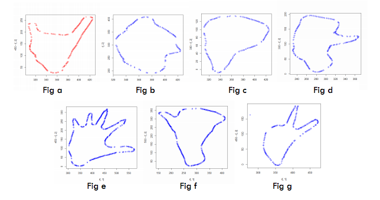

Gesture recognition
Guide: Prof. Hema Murthy
The purpose of the project is to detect and classify gestures in real time
with no constraints on the image sensor or computational device. Care is
taken to make it computationally feasible.
This document briefly describes the work done.
Steps:
Image data sets of seven different hand gestures are collected from
the frames of the videos taken through webcam. These data sets are
taken each as a different class.
The images sets (rgba images) collected are converted into hsv
images, which are more robust in lightening conditions, skin color
quality and are more useful in gesture recognition type of problems.
These hsv images obtained are then grey scaled using threshold
values of h, s, and v.
Those grey scale images are then smoothened for noise reduction.
Then edge detection is performed, which detects hand from rest of
the image, and then contour is plotted around the detected edge.
The two dimensional points on the contour are extracted as the
features of that particular image
K Means clustering and SVM for classification of gestures

With a particular set of gestures (fig. b,d,f ) an accuracy of 91.5% was observed.